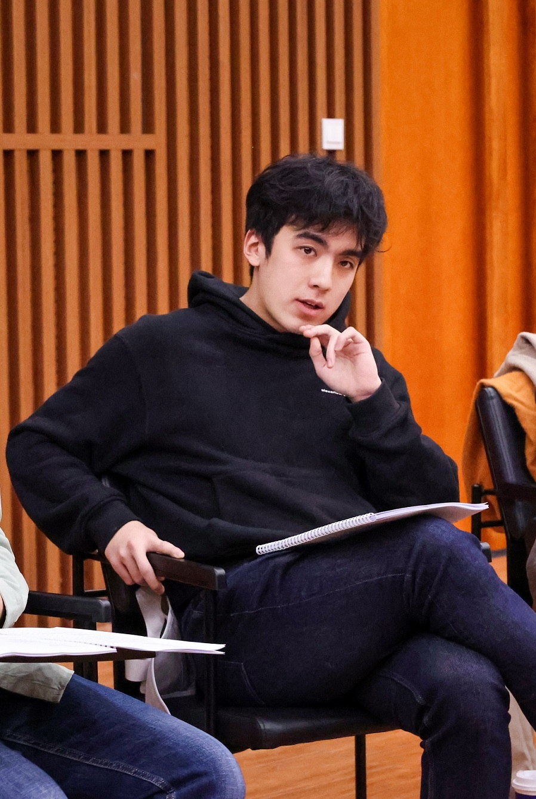
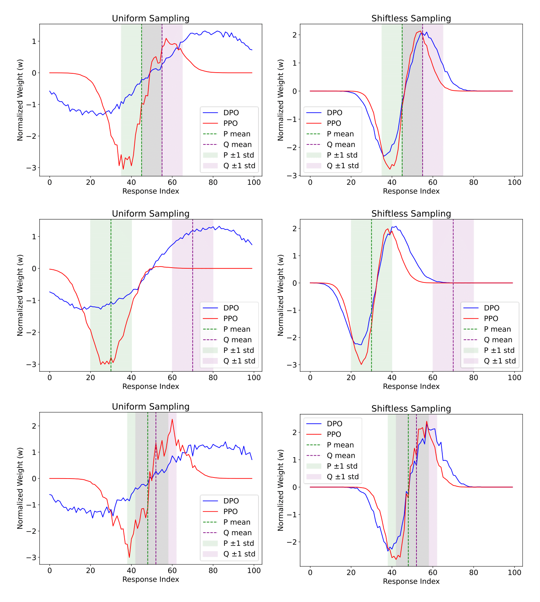
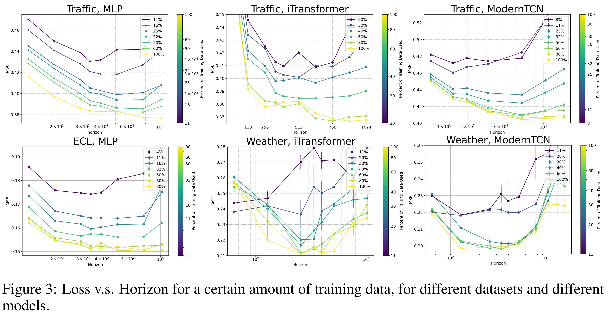
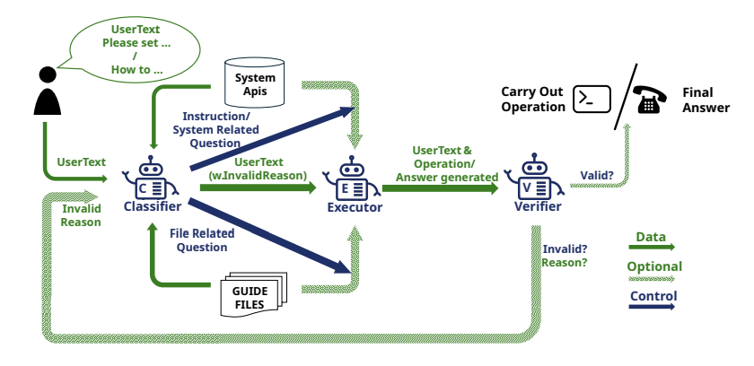
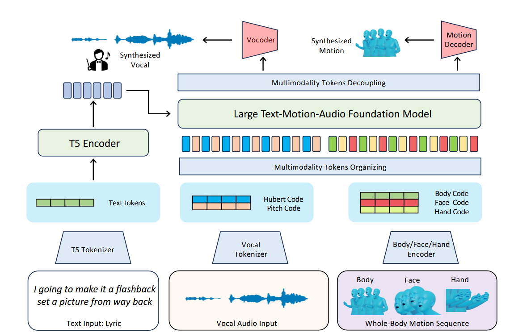

|
Qinwei Ma
Hi! I'm Qinwei Ma (马钦伟), nickname Aquapony, a senior undergraduate student majoring Computer Science and Technology at IIIS,
Tsinghua University (a.k.a Yao Class, directed by the Turing Award Laureate Andrew Chi-Chih Yao).
Previously, I had the honor to be mentored by Prof. Hang Zhao, Prof. Chuang Gan, Prof. Zhaoran Wang and Prof. Yi Wu at various directions, including multi-modal learning, embodied learning, multi-agent learning and reasoning, RLHF, etc.
In the spring semester in 2025, I am privileged to be advised by Prof. Tong Zhang on Reinforcement Learning and LLM reasoning.
In addition, I have two long-term collaborators, my high school and undergraduate classmate Jingzhe Shi and my advisor-and-collaborator Lei Li.
Before college, I took part in the 36th National High School Physics Olympiad, winning a gold medal which directly granted me access to Yao Class. I also took part in the Mathematics and Informatics Olympiad. I studied in Shanghai Foreign Language School and studied German as my first foreign language there.
Overall, I wish to thank my girlfriend Wanfei Li who keeps supporting me during my research and daily life.
📬 Email |
📑 CV |
🎓 Google Scholar |
💻 Github
|

|
Research Interest
My research interest lies in a broad range of fields, but all with a common goal to build a better human-AI society in the long-term future.
More specifically, these are the major topics I am currently interested in:
Preference Learning, including multiple variants of RLHF and potentially more in the future.
Multi-agent learning, including classic MARL algorithms and LLM-based agent architectures. This also includes human-agent interaction.
Theoretical analysis of language models and learning methods. I wish to find the most fundamental laws that drive the success of current models and learning algorithms. This may help us better explain, improve and control future models better.
|
Besides these directions, I am also interested in many directions but did not have a chance to give them a try. Generally speaking, I wish to find a proper way to regulate the agents in the future, align them with human interests and make them more controllable, secure and helpful even with superhuman power.
Personal Interest
Besides research, I make much effort to make my life enriched. This includes generally:
Musical Theater
I am a great fans for musical theaters, and once had the opportunity to take part in multiple plays as actors. An incomplete list of which includes:
Aaron Burr in 'Hamilton' (English)
Schikaneder in 'Mozart!'
Favell in 'Rebecca'
Marius in 'Les Miserables'
Beside these, I have also acted as many important roles in short cuts of musicals, including Gabe in 'Next to Normal', Raoul in 'Phantom of the Opera', etc. I also directly a ten-minute mixed cut of 'Next to Normal' in the tenth anniversary of Tsinghua Musical Club.
Sports
Though having suffered from a major injury in my sophomore year in college, I keep active in various sports, including soccer, badminton, etc.
Bridge Card
Bridge is an important hobby I have kept since I was in junior high school. In college I am currently a member of the Tsinghua Bridge Team. I took part in the National College Student Bridge Tournament twice in our team, ranking the eighth and sixth among the finalists respectively.
Werewolf Game
I am also a great fans of werewolf-like games. I was once invited to the most popular variety show for werewolves in China (京城大师赛), but failed to attent due to mismatched schedules.
Publications
(* for equal contribution)
|

|
Gradient Imbalance in Direct Preference Optimization
Qinwei Ma,
Jingzhe Shi,
Can Jin,
Jenq-Neng Hwang,
Serge Belongie,
Lei Li
Preprint
We identify the issue of gradient imbalance in DPO, and formally discuss its impact on the major challenges faced by DPO. Moreover, we provide a simple solution -- Balanced DPO -- to address the problem, empirically showing that such a simple alternative improves the performance of DPO.
|
|

|
Scaling Law for Time Series Forecasting
Jingzhe Shi*,
Qinwei Ma*,
Huan Ma,
Lei Li
NeurIPS 2024 (poster, main track)
Code
/
arXiv
/
OpenReview
We proposed a theoretical framework for Scaling Law for Time Series Forecasting, taking into account look back horizon as well as dataset size and model size.
We conducted experiments to validate our theory proposed and assumptions made.
Our key theoretical and experimental findings were that optimal look back horizon does exist and it increases with dataset size, calling for a more fair comparison when proposing new time series forecasting models.
|
|

|
CHOPS: CHat with custOmer Profile Systems for Customer Service with LLMs
Jingzhe Shi,
Jialuo Li,
Qinwei Ma,
Zaiwen Yang,
Huan Ma,
Lei Li
COLM 2024 (poster)
Code
/
arXiv
/
OpenReview
We proposed CHOPS, an LLM agent designed to efficiently access user information, interact with existing systems, and provided accurate, safe responses by leveraging a combination of small and large LLMs. Validated using the CPHOS-dataset we proposed in the same work, CHOPS demonstrated its potential to enhance or replace human customer service.
|
|

|
RapVerse: Coherent Vocals and Whole-Body Motions Generations from Text
Jiaben Chen,
Xin Yan,
Yihang Chen
Siyuan Cen
Qinwei Ma,
Haoyu Zhen>
Kaizhi Qian
Lie Lu
Chuang Gan
Preprint
Project Page
We introduce a framework for generating 3D body motions and singing vocals from textual lyrics using a multimodal transformer. Our approach, based on the RapVerse dataset, unifies language, audio, and motion through quantized models, achieving realistic joint generation of vocals and motions.
|
Representative Honors and Awards
(complete list can be found in my CV)
|
2022-2024: Three different school-level scholarships in Scientific and Technological Achievements, Artistic and Cultural Performance and Social Work respectively.
2024: First prize in Tsinghua Challenge Cup.
2019: Gold Medalist 🏅 in the 36st National High School Physics Olympiad (CPhO), ranking 26th in the final round.
|
Language and Skills
|
Language: Chinese (Native), English (Very Proficient), German (B2).
Programming languages: Python, C/C++, etc.
Mathematics: Calculus (Very Proficient), Linear Algebra (Proficient), Probabilistic Theory (Proficient), Statistics, Abstract Algebra, Game Theory, etc.
|
Service
|
ICLR 2025 Reviewer.
Part-time teacher in AI and Physics.
|
Fun facts
|
My favorite musical theater is 'Hamilton'. My favorite movie is 'Pulp Fiction'.
I've been wish to improve the law system (Chinese and global) in the two fields: 1) Technological Safety and Privacy, 2) Gender Equality and Female Rights.
|
This homepage is designed based on Jon Barron's homepage and deployed on GitHub Pages. Last updated: Jan, 2025.
© 2025 Qinwei Ma
|
|
{kind=link}